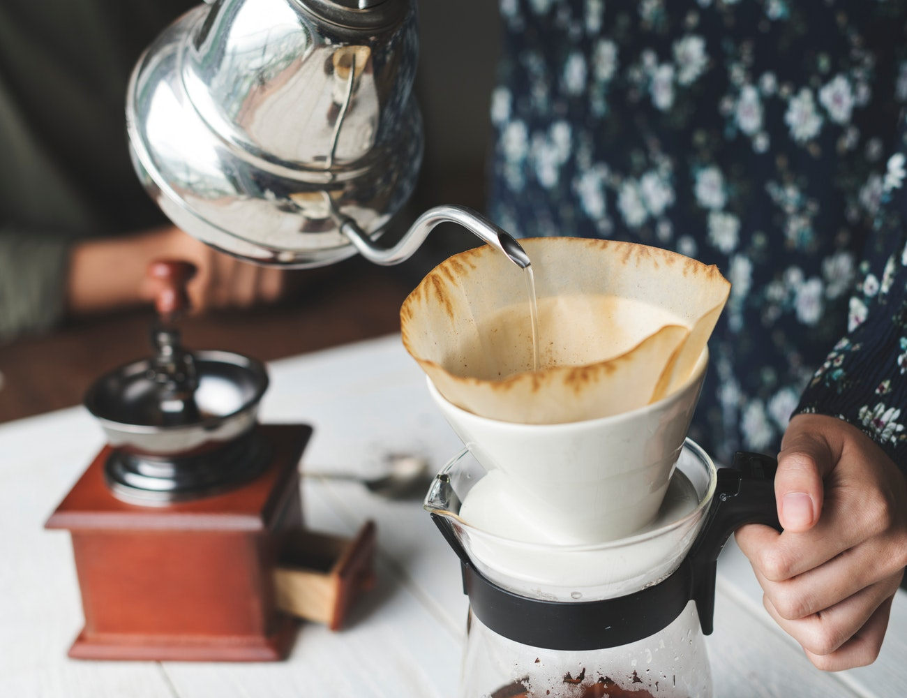

Brew your own coffee!
Enjoy a day at Serenity Spa!
Experience brewing your own coffee with Danish host Claus in his own home! In the 2 hours, you will have the chance to taste at least 4 cups of coffee prepared in different methods.
We will use the method of coffee cupping and you will learn the technique of making your own pour-over coffee. Claus will also talk about the coffee culture in Denmark and, of course, can give you some personal recommendations on places to go while you are in Copenhagen.
You don't need to bring anything, we have all the equipment here. Make sure you have a little breakfast before.
299 DKK